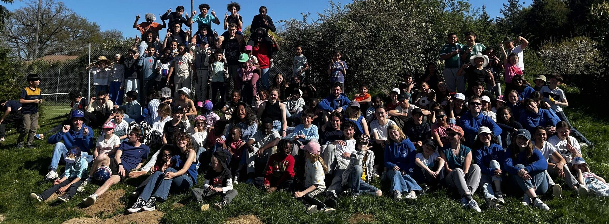
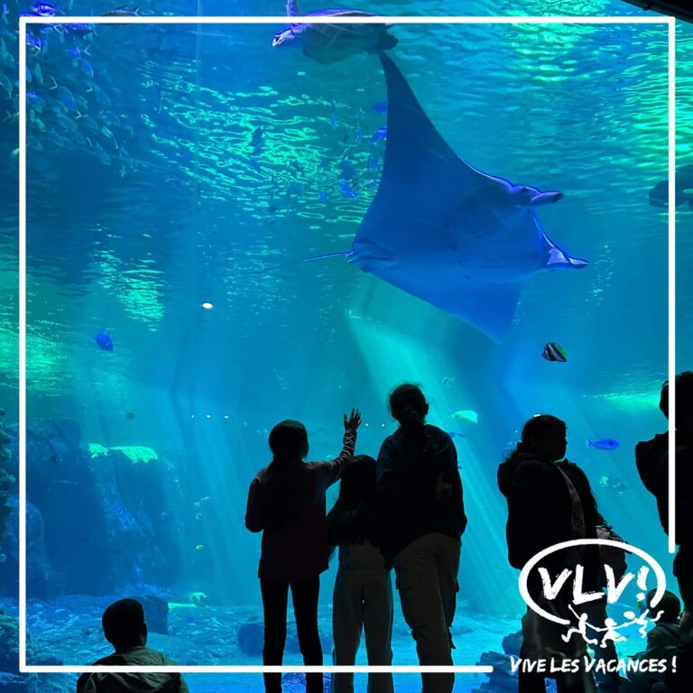
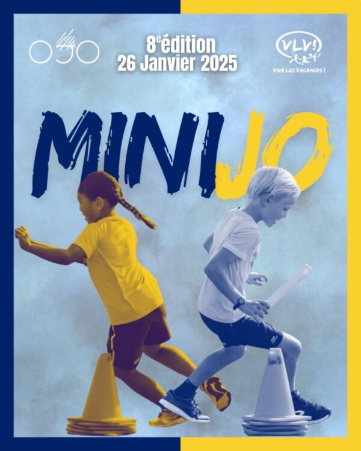
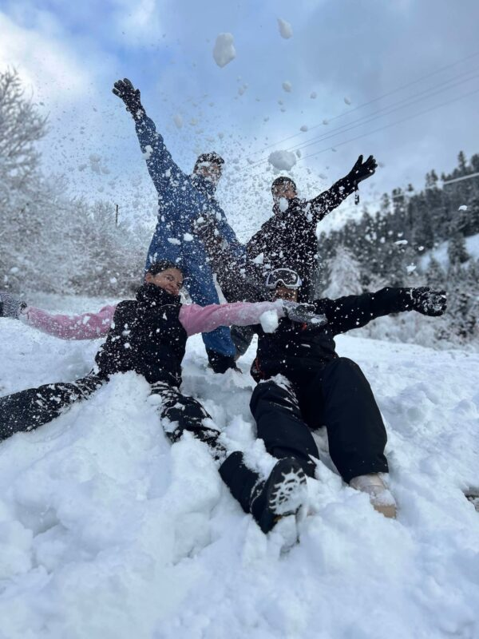
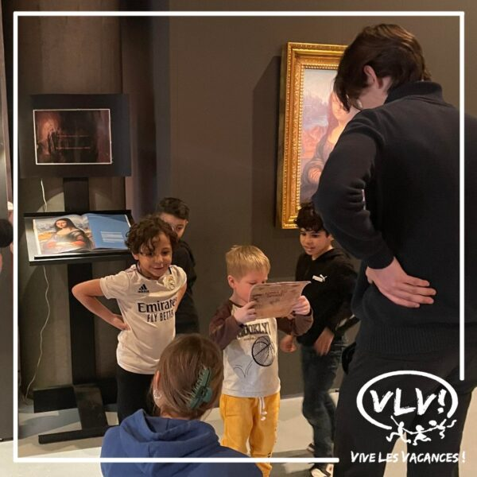
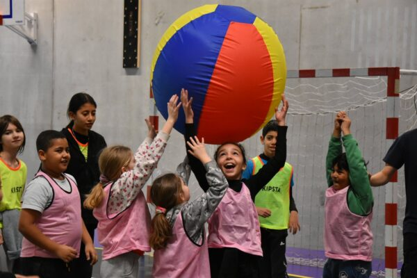
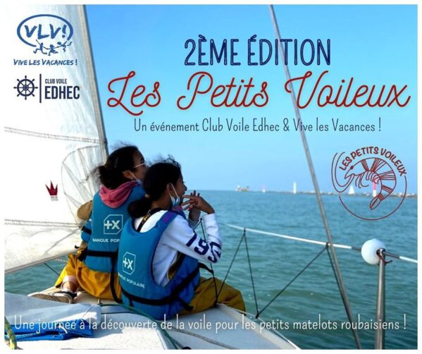
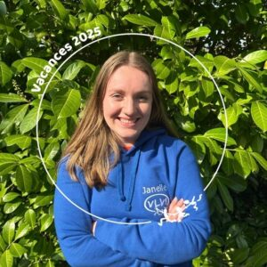
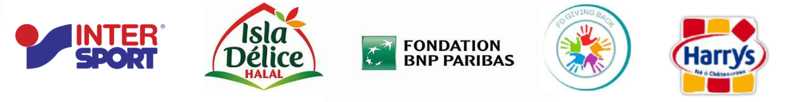

Parce que chaque enfant mérite de partir en vacances
Depuis 1993, l'association Vive Les Vacances ! permet aux enfants issus de milieux défavorisés de la Métropole Européenne de Lille de partir en vacances, de s'ouvrir au monde et de s'épanouir à travers des activités éducatives, sportives et culturelles tout au long de l'année.
Des bénévoles engagés qui accompagnent chaque enfant individuellement
Faire découvrir de nouveaux horizons, activités et cultures aux enfants
Accessible à tous les enfants des centres sociaux partenaires de la MEL

Depuis 1993, Vive les Vacances! organise de A à Z une semaine de vacances pour 100 enfants au mois d'avril, dont la destination change chaque année. Au programme : ateliers découvertes, sorties, activités sportives et culturelles, grands jeux, veillées et pièce de théâtre jouée par les bénévoles qui constitue l'imaginaire de la semaine.
En savoir plus
Les Mini JOs sont une journée de compétition sportive organisée pour les enfants des centres sociaux partenaires âgés de 8 à 12 ans, en partenariat avec l'association de l'EDHEC OJO. L'objectif ? 1) faire découvrir aux enfants la pratique du sport sous l'angle de ses valeurs, 2) les sensibiliser au handicap et à l'écologie, 3) faire en sorte qu'ils s'amusent ! En 2024, la 7ème édition a rassemblé plus de 100 enfants !
En savoir plus
Accompagnement dans 7 centres sociaux : Bois Blancs, Moulins, La Busette, Marcel Bertrand (Lille), L'Alma, L'Hommelet (Roubaix), Larc Ensemble (Villeneuve d'Ascq). Chaque enfant est suivi toute l'année par le même bénévole pour un accompagnement personnalisé, notamment en français et en mathématiques.
En savoir plus
Sorties bimensuelles pour permettre aux enfants de quitter leur quartier et découvrir de nouveaux horizons, s'initier à des activités culturelles et sportives variées, et développer leur curiosité et leur ouverture d'esprit. Plus de 80 enfants ont participé à ces sorties en 2024-2025.
En savoir plus
Du 2 au 5 janvier 2025 au Centre Le Chorin à Plainfaing (Hautes-Vosges), en partenariat avec le Ski Club EDHEC. 32 enfants des centres sociaux de Roubaix, Villeneuve d'Ascq et Lambersart ont découvert les sports d'hiver : ski, patinage, luge et veillées montagnardes. En 2026, ce séjour sera ouvert aux centres sociaux de Lille.
En savoir plus
3ème édition organisée le 3 mai 2025 à la base nautique d'Hellemes, en partenariat avec le Club de Voile de l'EDHEC. 21 enfants des centres sociaux de l'Hommelet et de l'Alma ont découvert la voile : tour en bateau, pédalo, parcours pieds nus sensoriel, trampoline, tyrolienne et balade autour du lac.
En savoir plus
« Parce qu'un enfant qui a compris ses devoirs est un enfant confiant et ambitieux pour son avenir, parce que chaque sourire après une sortie compte. Depuis 32 ans, VLV! Se bat pour que le mot Vacances ait un sens. »

Nous intervenons dans 7 centres sociaux de la Métropole Européenne de Lille